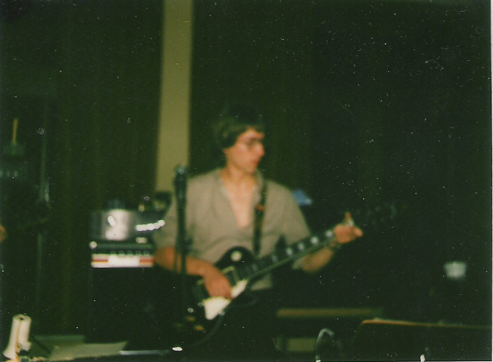
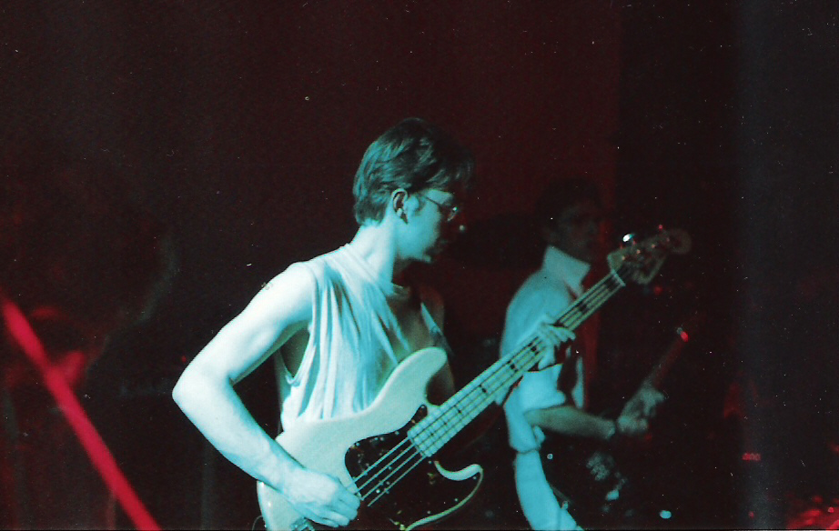
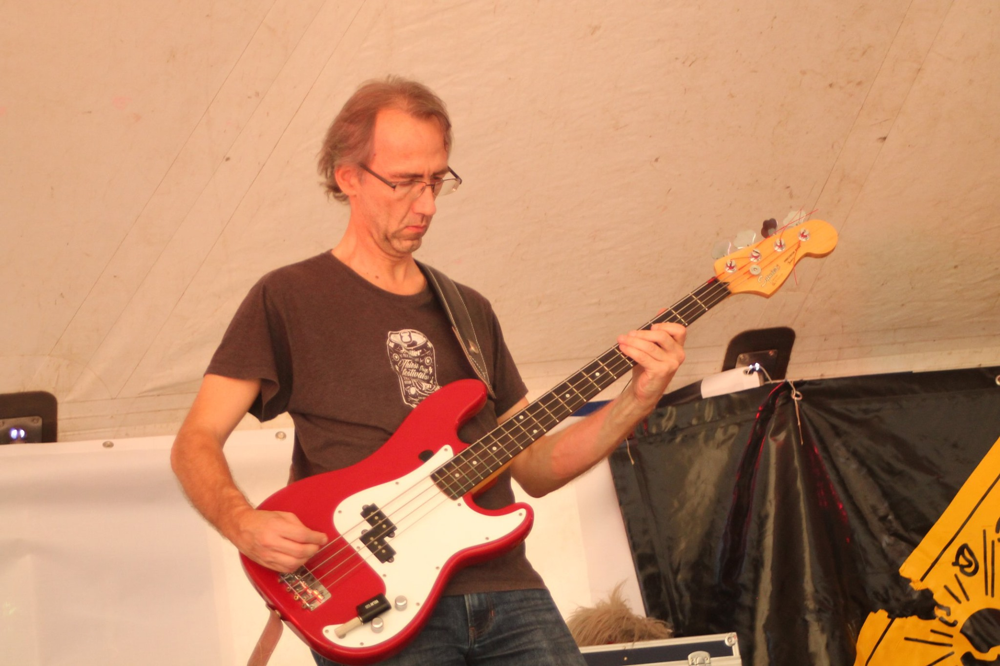

Guitars
Ever since I was young I was interested in music. Taping music from the radio was my favourite hobby. In my teenage years I discoverd guiters and started playing in band. At first as a guitar player but later as a bass player.
Me at my first gig in 1982
This picture was taken at the wedding of our keyboard player, Danny.
Me as bass player in 1985
Here's me again with my band Batida Orange in the Manhattan in Leuven.
Me as bass player in 2019
This is me with my current band, C4.
